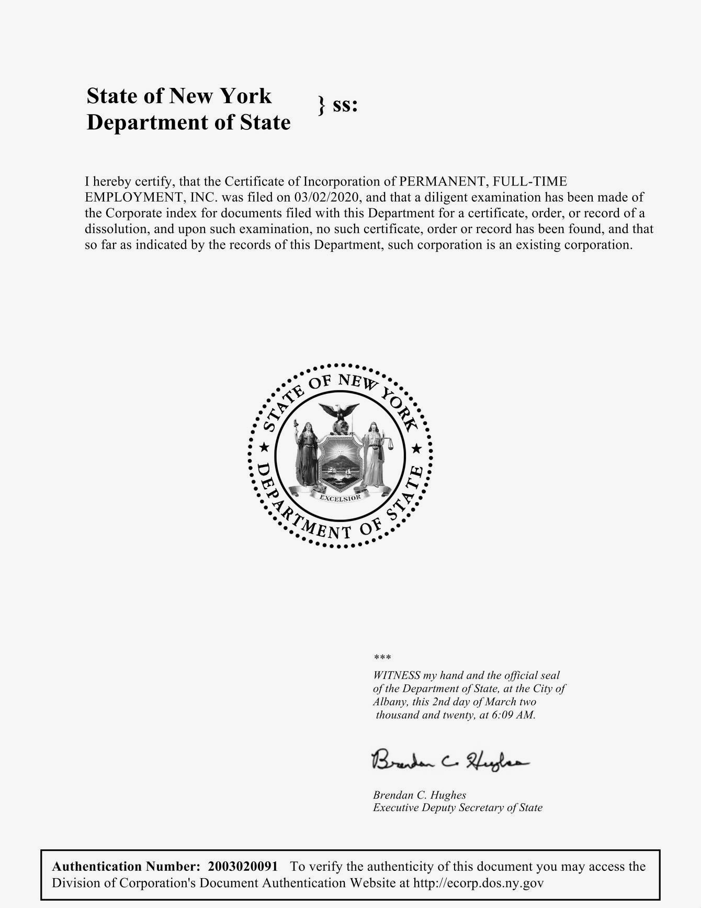

Immovable Properties
1BBP, Brooklyn, NY
2020
The fifth preference EB-5 visa provides a path to citizenship for alien investors who make an investment of capital not less than the statutory minimum in a new commercial enterprise “which will benefit the United States economy” and “create permanent, full-time employment” for at least 10 qualifying U.S. workers in the United States. The EB-5 program allows the state to extract monopoly rent on its exclusive territorial sovereignty and its prerogative power of immigration enforcement; the evaporation of traditional real estate financing since the 2008 financial crisis has made major development projects reliant on the program to maintain favorable profit margins.
An exhibition is staged in a donated real estate venue constructed under the EB-5 program. The venue is left open to the public for the exhibition duration.

 Distinction, 2020
Distinction, 2020
Press submitted in satisfaction of the evidentiary criteria for O-1B
and EB-1 ("artist’s") visas

 PERMANENT, FULL-TIME EMPLOYMENT, INC., 2020
PERMANENT, FULL-TIME EMPLOYMENT, INC., 2020
New Commercial Enterprise (NCE) established to satisfy the
requirements of the EB-5 visa, pending activation by an investment of
capital in an amount not less than the statutory minimum by an
immigrant investor


 Trilogy (Limassol Seafront), 2019
Trilogy (Limassol Seafront), 2019
C-Prints of development projects animated by Cyprus’
citizenship-by-investment program
 Liquid Allowance,
2020
Liquid Allowance,
2020
Air travel-compliant resealable bags with potable water
 Fixture, 2020
Fixture, 2020
Materials at One Brooklyn Bridge Park provided by Licensor (Chashama,
Inc.) in excess of those provided by Landlord (RAL Companies, Vanke
US, and Oliver’s Realty Group) to equip the exhibition space